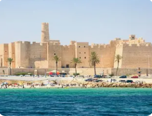
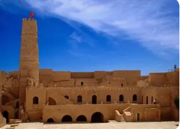
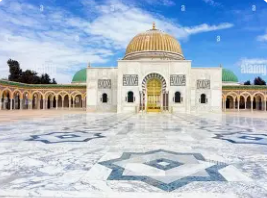
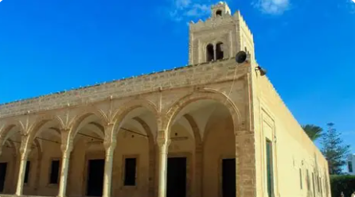
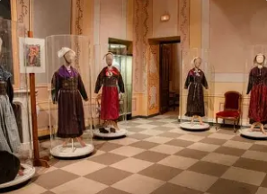

La Ville du Premier Président

Monastir est un gouvernorat situé sur la côte est de la Tunisie, au cœur du Sahel tunisien. C'est une ville côtière historique et touristique, bordée par des plages de sable fin et la mer Méditerranée.
La ville de Monastir, chef-lieu du gouvernorat, est la ville natale du premier président tunisien Habib Bourguiba. Elle est célèbre pour son imposant Ribat, sa marina moderne et son aéroport international Habib Bourguiba.
Le gouvernorat se distingue par son patrimoine historique exceptionnel, ses stations balnéaires renommées comme Skanes, son mausolée présidentiel majestueux et son rôle important dans l'histoire moderne de la Tunisie.
Forteresse militaire islamique du VIIIe siècle, l'une des plus anciennes et imposantes de la Méditerranée. Lieu de tournage de nombreux films historiques.
Monument funéraire majestueux du président Habib Bourguiba, avec ses deux minarets dorés et son dôme doré imposant. Architecture islamique moderne exceptionnelle.
Magnifiques plages de Skanes et de la Corniche, zones touristiques prisées avec hôtels de luxe, activités nautiques et golf international.
Port de plaisance moderne pouvant accueillir plus de 300 bateaux, entouré de cafés, restaurants et boutiques. Point de départ pour excursions en mer.

Forteresse islamique construite en 796 sous le règne du calife abbasside Haroun al-Rachid. Édifice défensif et religieux remarquablement préservé avec sa tour de guet Nador offrant une vue panoramique sur la mer et la médina.

Monument imposant inauguré en 1963, tombeau du père de l'indépendance tunisienne. Architecture somptueuse avec marbre, dorures, mosaïques et deux minarets dorés de 25 mètres. Symbole de l'histoire moderne tunisienne.

Mosquée du IXe siècle construite à côté du Ribat, formant un ensemble architectural religieux et militaire unique. Minaret carré caractéristique et cour intérieure paisible avec colonnes antiques.

Installé dans le Ribat, ce musée présente une riche collection de costumes traditionnels tunisiens, bijoux, tissus brodés et objets du patrimoine sahélien. Témoignage vivant de l'artisanat local.